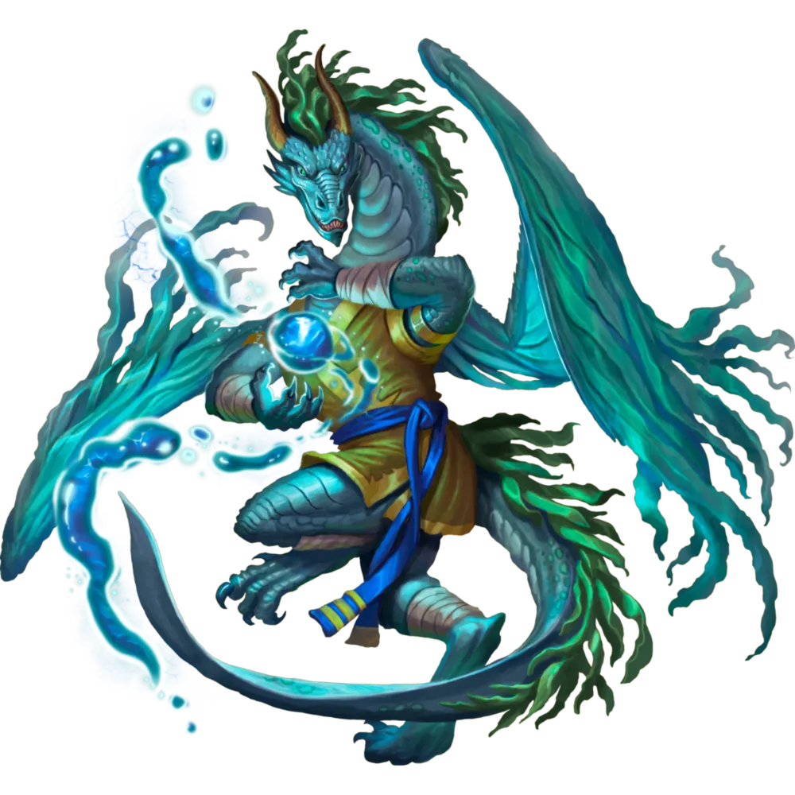

|
在众多类人种族的文化中，巨龙都是力量与强盛的象征。因此，再加上与生俱来的傲慢，巨龙往往很难承认事情出了差错。然而，有些巨龙体内奔涌着狂暴的魔法能量，这股能量一旦失控飙升，便会彻底改变它们的一生。有时，整支龙族血脉都会继承这种魔力，并在漫长的世代中延续下去。但对于这些所谓的“异类龙”而言，这股失控的能量究竟意味着什么？整个巨龙社会或许对它们不屑一顾，但它们强大的魔力却为其带来了无穷无尽的未开发潜能！ 你是一条巨藻龙，出身于一脉好胜的水栖匠人世系，热衷于创作并收藏宏伟的雕塑作品。你是莱希龙家族的一员。你的关联伤害类型为钝击，你的吐息武器为15尺锥状，需要进行体质豁免。你可以选择是否获得日光之力。 巨龙特质属性值提升。你的力量或体质值提升2点。 年龄。任何年龄段的巨龙都可以举行永恒之光仪式，因此哪怕是一条刚完成仪式的初生永光龙，严格来说也可能已经活了数千岁。不过，仪式澎湃的魔法能量会洗去衰老的痕迹。从仪式中苏醒的初生永光龙洋溢着青春活力与无限潜能。尽管部分学者持不同看法，但只要不死于暴力或其他灾祸，永光龙的寿命与传统派巨龙同样漫长。 阵营。永光龙的龙族血统会强烈影响其信念，但影响程度远不如同血统的传统派巨龙。例如，银永光龙往往是善良的捍卫者，而黑永光龙则往往狡诈刻薄。然而，永光龙深知龙脉并非不可违逆的宿命。任何永光龙都可以完全抛弃先祖的旧习，去开拓属于自己的道路。 体型。除非一条永光龙将自身魔力专注于增大体型（许多永光龙都会这样做），否则它们的体型并不会比常见的类人种族更大。你的体型可在小型或中型之间自选。 速度。你的基础步行速度为30尺。 黑暗视觉。你同样具备传统派巨龙的敏锐感官。在距离你60尺范围内，你可以将微光光照视作明亮光照，将黑暗视作微光光照。你在黑暗中无法分辨颜色，只能看到灰度的影像。 龙之馈赠。你从巨龙职业所列的龙之馈赠中获得一项龙之馈赠。如果某项馈赠具有先决条件，你必须满足其先决条件才能获得它。 龙类。你的生物种类为龙类，而非类人生物。 天生武器。除常规的徒手打击外，你还获得两种天生武器攻击：啃咬攻击与爪击攻击。你的啃咬攻击造成1d6点穿刺伤害；你的爪击攻击造成1d4点挥砍伤害。 你必须至少有一只手空闲才能发动爪击攻击。 你在进行爪击攻击的攻击检定和伤害掷骰时可以使用敏捷代替力量，但啃咬攻击不适用。 语言。你能够说、读、写通用语和龙语。 水陆两栖。你拥有等同于你步行速度的游泳速度，且可以在空气和水中呼吸。 永光巨藻龙背景设定巨藻龙是高傲冷淡、博学多识的艺术与时尚鉴赏家。虽然它们耽于虚荣与奢靡的倾向在大多数龙族中颇为常见，但它们不拘一格的独特品味却鲜少得到其他种类巨龙（乃至其他巨藻龙）的认同。巨藻龙极少信奉宗教，大多数巨藻龙笃信一种颂扬华贵与纵情享乐的美学哲学，崇拜丰饶富足，并将追求美的行为奉为至高美德。 它们的贪婪几乎毫无止境，唯独异常专一地聚焦于精美艺术品的搜集与培育。在传统派巨龙中，这种执念通常表现为宏大水下大教堂博物馆中陈列的浩瀚艺术藏品，专为引来其他巨龙饱含嫉妒的赞叹而设。而永光龙则更常亲自投身艺术创作，每当想要扩充藏品时便直接创作新的作品。这些巨龙将自己视为个人风格与美学理念的缔造者，它们的宝库也从实体藏品延伸至自身所学的一切艺术知识、训练与技法。面对技艺精湛的艺术家，巨藻龙抱有同等分量的敬意与嫉妒。 与大多数水生巨龙不同，巨藻龙偏爱在浅海而非深海筑巢，以便自由往返于陆地与海洋之间。它们创作的艺术品通常既能在水面之上展示，也能在波涛之下陈列，因此普遍青睐石雕或吹制玻璃雕塑。雕塑的立体轮廓还能确保缺乏色觉的水下邻居，乃至完全没有视觉、依靠回声定位导航的水生生物，也同样能够欣赏它们的作品。 巨藻龙好胜心极强，热衷于向他人证明自身个人风格与审美品味的优越性。对永光巨藻龙而言，冒险同伴之间凝结的情谊往往难以把握，因为在巨藻龙的生命中，最重要的人通常是一位劲敌。因此，巨藻龙冒险者几乎总会挑中一位亲密的冒险同伴，并与其建立起激烈的竞争关系。这种针锋相对的关系往往占据了巨藻龙大部分的时间与精力，而在劲敌面前证明自己，也通常是巨藻龙获得成长与蜕变的契机。然而这常常令巨藻龙的同伴感到困惑与沮丧，因为其他大多数族裔通常更偏爱少些火药味的相处方式。这往往导致巨藻龙冒险者不得不辗转于一个又一个队伍之间，直到找到一位愿意回应这种亦敌亦友默契的同伴。 永光巨藻龙青睐那些能让它们炫耀技艺、在他人面前洋洋自得，并在每次危急关头证明自己的援助不可或缺时借机调侃同伴的职业。吟游诗人在它们之中十分常见，与同伴的较劲能激发它们攀上更高的艺术巅峰。战士与武僧也是热门之选，不过偏向武技的巨藻龙若在宝库的精美藏品间发现某件潜藏力量的神秘奇物，往往会转而成为奇术师。尽管极少有巨藻龙愿意崇拜神�o，但有些巨藻龙愿意与尊重其个人美学极致追求的宗主缔结契约。 嫉羡激思鉴于巨藻龙热衷于举办开放式艺术展，它们的展览乍看之下似乎面向广大受众。然而，巨藻龙艺术家真正的目标是折服并惊艳其他巨藻龙与艺术家，因为它们的艺术才华正是在与真实或假想劲敌的较量中磨砺而成的。这种持续不断的自我审视带来了一个意想不到的结果：由于它们总在一心追求精进技艺而非追名逐利，巨藻龙艺术家在自身社群与地域之外往往鲜为人知，极少获得广泛的成名或声望。 延伸阅读：对应怪物图鉴：巨藻龙 ・ 主书通用巨龙种族特质 ・ 巨龙职业 ・ 本卷新增龙之馈赠 |
 巨藻龙（Kelp Dragon） |